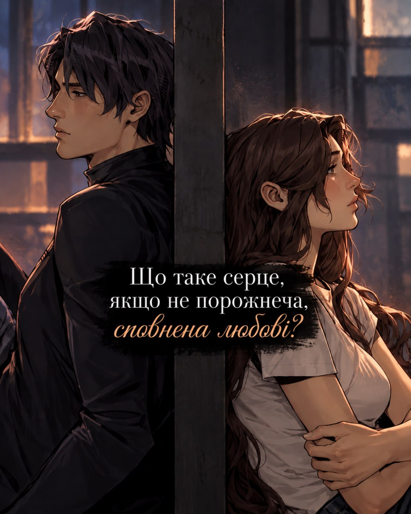
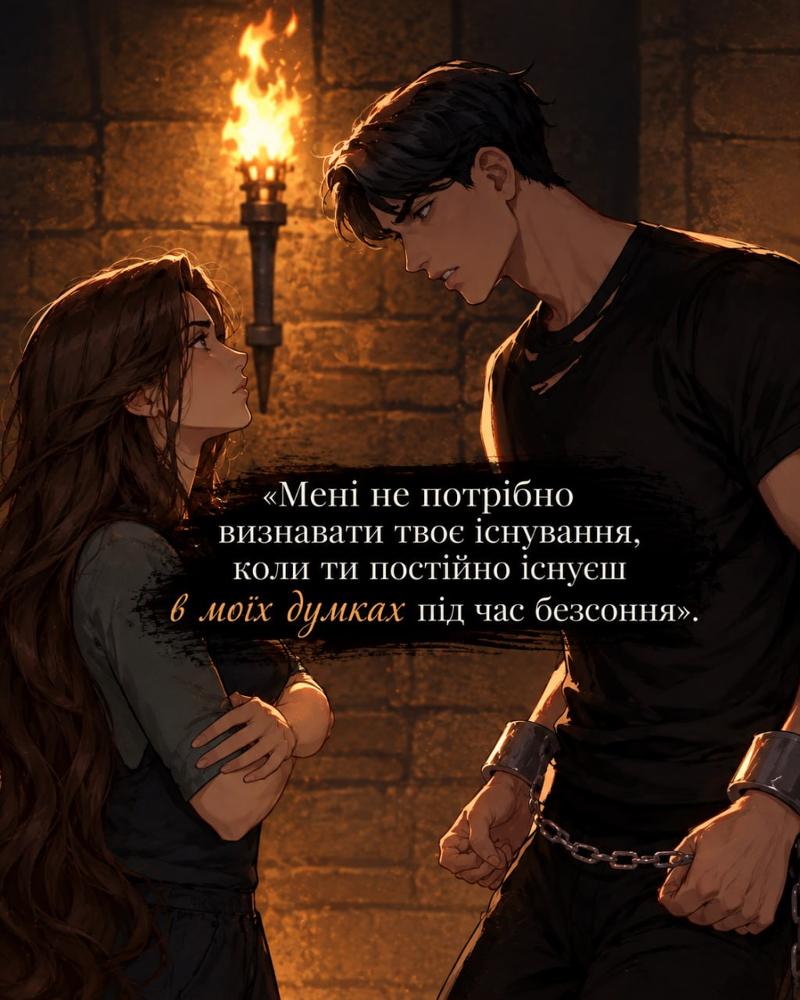

ГАЛЕРЕЯ ТА ТРОПИ
Натисніть на картку, щоб зануритися в детальний перегляд та цитати

Огляд
Фрагмент I
Порожнеча та Любов
«Що таке серце, якщо не порожнеча, сповнена любові?»
Натисніть для зуму

Огляд
Фрагмент II
Думки під час безсоння
«Мені не потрібно визнавати твоє існування, коли ти постійно існуєш в моїх думках...»
Натисніть для зуму

Огляд
Фрагмент III
Тропи Книги
Вороги до коханців
Вимушена близькість
+4 тропи
Переглянути всі тропи